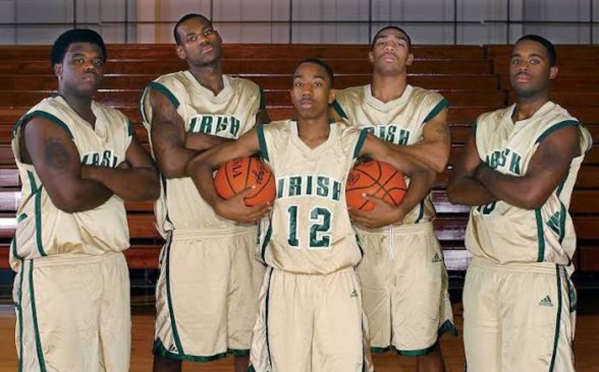
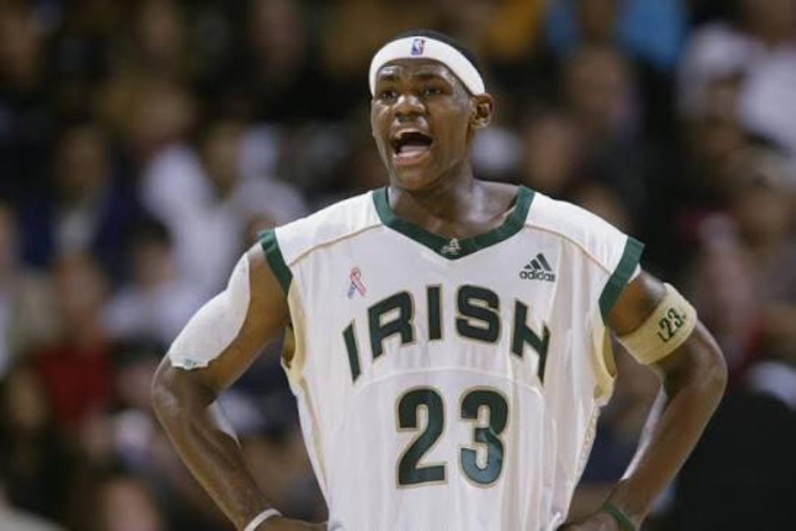
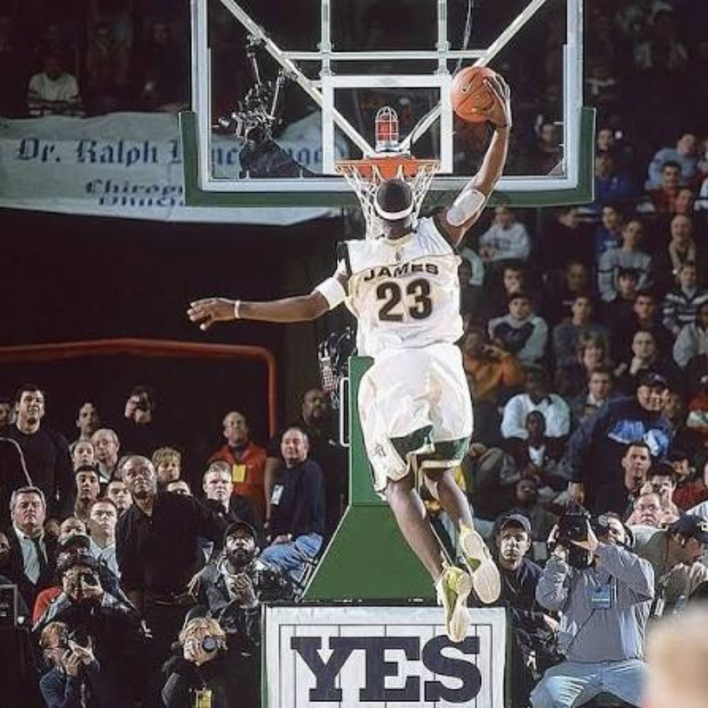
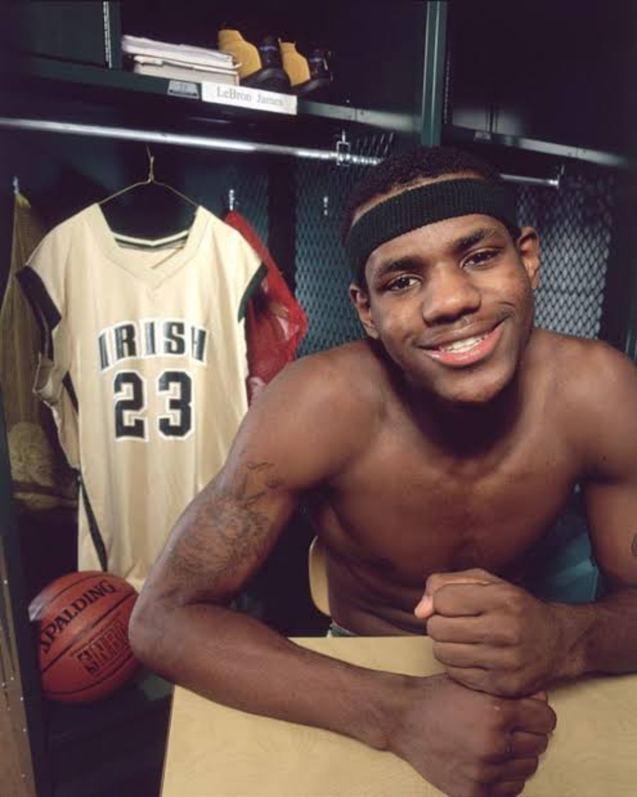
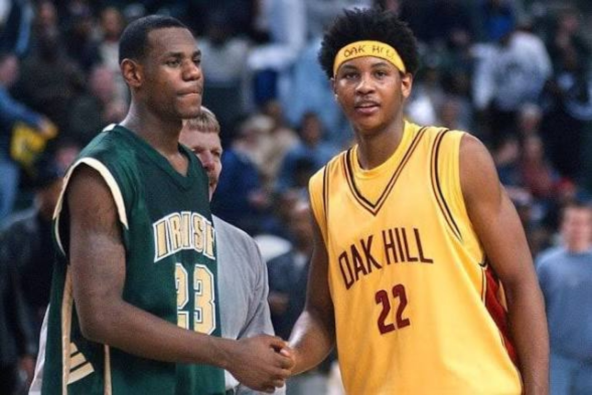
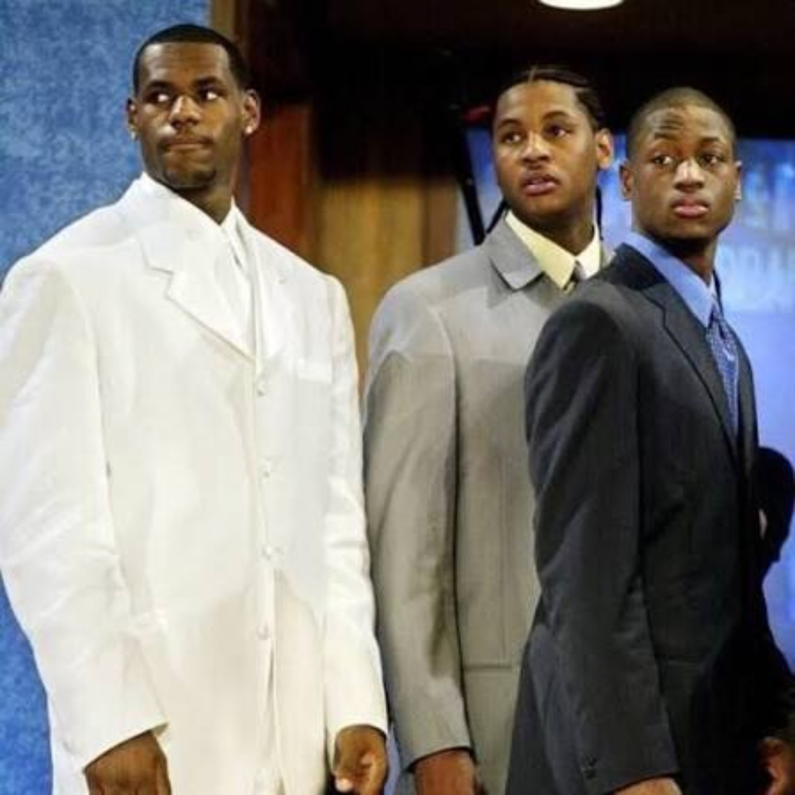
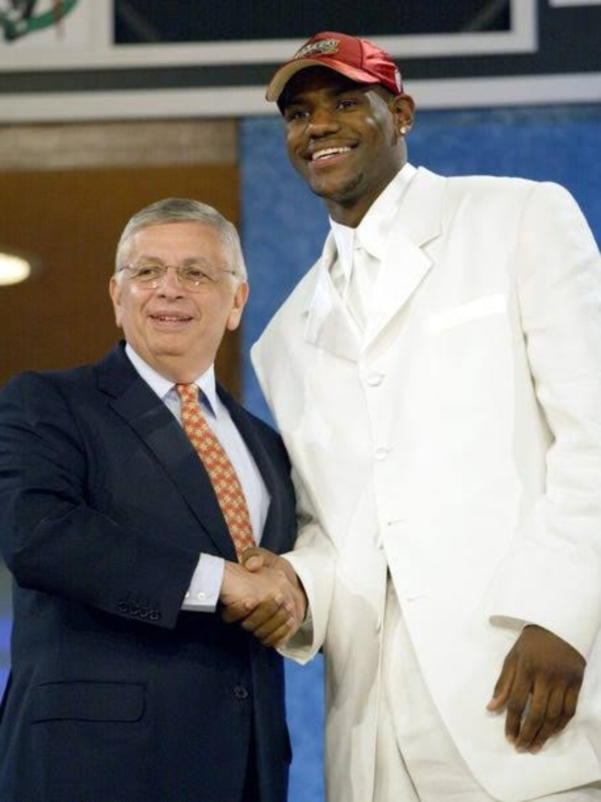

01 / Before the world knew the name
Before championships could become arguments, before the television specials, before one Finals loss could become a referendum on a man's entire career, there was a kid in Akron whose game looked almost too advanced for the surroundings. No ring count. No all-time ranking. No carefully constructed legacy. Just an oversized teenager seeing passing lanes most players did not see, playing with a kind of force that made the usual high-school scouting language feel inadequate.
The strange part of the LeBron James story is that it begins with a verdict. He was celebrated as a future NBA great before the NBA had asked him to do anything. We tend to tell that story backward now because we know so much of what happened afterward. At 4 Da Kulture, we're refusing that shortcut. File 001 returns us to the version of LeBron that existed before he had a professional résumé, and asks a tougher question: what could a serious basketball observer actually know in 2003?
The answer is a lot, but not everything. You could know he was a generational athlete. You could see that his passing was unusually sophisticated. You could see a physically mature frame, open-court speed, defensive playmaking and an ability to bend a game without needing to take every shot. You could not honestly know he would deliver every promise attached to his name. That distinction matters because prophecy and evaluation are two different jobs.
The first chapter of this archive is about that distance between hype and proof. It is about Akron and the people around him, the cameras that turned high-school basketball into an event, the nights that made believers out of skeptics, and a draft conversation more complicated than hindsight usually allows. It ends when Cleveland calls his name. The professional story belongs to the next file.
02 / Akron was not a marketing campaign
LeBron did not arrive as a polished national brand. He grew up in Akron, Ohio, with his mother, Gloria, facing instability well before anyone was selling the idea of a basketball king. That environment belongs in the account, not as a sentimental shortcut or a guarantee of greatness, but because it helps explain the people and the place attached to his first real basketball identity.

St. Vincent–St. Mary became the center of that identity. The Fighting Irish were not simply a famous player and a collection of anonymous teammates. Dru Joyce III, Sian Cotton, Willie McGee and Romeo Travis were part of a close-knit group with its own ambitions and history. LeBron was the obvious headliner, but the team context matters. It was a group of kids navigating the increasing absurdity of playing ordinary school schedules under extraordinary public attention.
The coaching context matters too. Keith Dambrot guided the program during the first two years of this run; Dru Joyce II took over for the last two. Different voices, same escalating challenge: develop a real basketball team while outsiders treated practically every game like an audition for an NBA career that had not yet started.
That is where the shorthand of the era becomes misleading. People talk as though LeBron was born on television. He wasn't. He was raised in a city, developed within a program and learned how to win alongside kids who knew him long before the country did. The show was built around him later. The basketball foundation came first.
03 / Four years, three state titles, one enormous target
The results explain why the noise would not go away. As a freshman in 1999–2000, LeBron helped lead St. Vincent–St. Mary to a 27–0 season and an Ohio Division III championship. A ninth grader was already a major player on a varsity champion. The following season, the Irish went 26–1 and defended their title. The lone loss came against national powerhouse Oak Hill Academy.
That second season is an important marker. Dominating other freshmen is one thing; helping a varsity team repeat as state champion is something else. Competition, responsibilities and expectations were getting bigger at the same time as his body and game were developing.
Junior year was the first obvious reminder that no team, however famous, gets handed a perfect ending. St. Vincent–St. Mary went 23–4 and fell to Cincinnati Roger Bacon in the Division II state final, despite 32 points from LeBron. When the reputation becomes larger than the player, a loss can be treated as a scandal. It should instead have been useful evidence: even this extraordinary prospect was still playing basketball, not acting out a predetermined script.
As a senior, the Irish finished 25–1 and reclaimed the Division II title, beating Kettering Alter 40–36 after trailing at halftime. LeBron delivered 25 points and 11 rebounds in that title game. The only senior-year loss was to Akron Buchtel. Across four seasons the teams amassed 101 wins against six losses, with three Ohio state championships. These are not mythical numbers; they are the record of a genuine high-school powerhouse.
But the most impressive statistic might be what the team kept doing once the attention became relentless. Travel, television, national rankings and the weight of everybody's expectations did not prevent them from ending the era with another trophy. That is not the same as saying LeBron was perfect. It is saying the hype did not erase his ability to compete for something tangible with his teammates.
04 / The body was NBA-ready. The vision was the giveaway.
The easiest feature to notice was physical. LeBron was unusually big and strong for a teenage perimeter player, and he could move in the open floor like a guard. A defender could shade him toward the basket and still lose the race to the rim. He could rebound through contact, ignite a break and cover ground in only a few strides. A coach watching an ordinary high-school scouting tape could quickly see the mismatch.

Yet describing him as an athlete who happened to play basketball never captured what made him different. Watch the way he handled the ball with his head up. Watch the ball arrive before a teammate finished making the cut. Watch the passes from one side of the floor to the other, the willingness to hit an open shooter when a crowd was waiting for a highlight dunk, and the way he could alter a possession without scoring.
That passing instinct is the strongest piece of pre-draft evidence that the ceiling was not simply 'elite wing scorer.' LeBron had the physical profile of a power forward, enough perimeter control to initiate offense and the vision of a playmaking guard. The NBA would later expand those possibilities, but the outline existed already.
The flaws were visible too. His jumper could run hot and cold. His half-court shot creation was not yet as complete as that of the very best pure scoring prospects. He was still learning the balance between controlling a game and imposing himself as a scorer. A big athletic advantage against teenagers did not automatically guarantee clean scoring possessions against grown NBA defenders.
None of that invalidated the projection. It made it more interesting. A real evaluation has to identify what is already exceptional, what can improve, and what might not translate cleanly. At the time, the most compelling argument for LeBron at No. 1 was not that he had zero weaknesses. It was that his combination of size, movement, instincts and all-around impact was almost impossible to reproduce.
05 / A magazine cover became a national expectation
On February 18, 2002, when LeBron was a 17-year-old junior, his face appeared on the cover of Sports Illustrated beneath the words 'The Chosen One.' That was more than an ordinary recruiting accolade. It converted a forecast into a public identity. People who had never watched a full high-school game suddenly felt invited to debate whether a teenager could become the next great NBA star.
The culture around the game made the moment even louder. Michael Jordan's legacy still defined the sport's imagination. Kobe Bryant, Allen Iverson, Tracy McGrady, Vince Carter and others were carrying the perimeter-star conversation into a new era. Every spectacular teenage prospect was evaluated through an impossible comparison: could he inherit the place that Jordan had occupied?
LeBron was particularly susceptible to that machine because so much of his talent was visual. You didn't need a sophisticated statistical model to understand an almost-grown-man racing coast to coast, dunking through a defense and throwing passes the camera could barely follow. The footage traveled; so did the claims.
We have to separate three things that tend to get blended together: the magazine headline, the prospect's actual skills and the fan's emotional reaction to both. One is storytelling. One is evaluation. One is pressure. A headline can make a teenager famous, but it cannot make him hit a jump shot, rotate defensively or win a playoff series years later.
This is also where the expectations became unusually unfair. LeBron didn't simply have to be a successful NBA player. He was being framed as a historic answer to a question much older than he was. That is an unreasonable demand on a kid. It is still fair, however, to judge the actual basketball evidence behind the prediction. By the time the senior season arrived, there was plenty of that evidence.
06 / December 12, 2002: the night the country tuned in
If the magazine cover turned LeBron into a story, December 12, 2002 put the story on national television. St. Vincent–St. Mary faced Oak Hill Academy, one of the most respected high-school basketball powers in the country. The opponent mattered. This was not a manufactured showcase against overmatched local competition; it was a measuring-stick game against a program with genuine national standing.

LeBron delivered 31 points, and the Irish won 65–45. For people hearing the name for the first time, this was the perfect introduction: the athleticism was real, the physical maturity was real, and the kid could perform when a much larger audience showed up. More importantly, the result was emphatic. The national spotlight did not swallow the basketball.
The night is remembered for dunks and charisma, but our attention goes to how naturally LeBron could switch jobs. One possession he was bringing the ball up like a guard. The next he was attacking from the wing, or finding an open man, or using his body to finish a play. There was no normal high-school position label that described all of it.
For a generation of basketball fans, this was the first full exposure rather than a magazine image or grainy highlight. It was reasonable to leave that game believing LeBron belonged at the top of the draft conversation. It was not reasonable to pretend that one December night settled what he would become twenty years later.
The importance of Oak Hill is simpler and more powerful than the legend: he took the national stage against a legitimate opponent, and he looked like he belonged on a stage even bigger than that.
THE HYPE WAS REAL. THE FUTURE WAS STILL UNWRITTEN.
07 / January 4, 2003: Hollywood gets its close-up
The tour came to Southern California on January 4, 2003, when St. Vincent–St. Mary played Santa Ana Mater Dei at UCLA's Pauley Pavilion. This is the game that can get tangled up in memory with other California matchups, so the details deserve to be clean. The opponent was Mater Dei, not Westchester. It was Pauley Pavilion, not the arena in New Jersey where the Westchester game would happen a month later.
Mater Dei did not roll out a welcome mat. It was a serious Southern California basketball program, with players including D.J. Strawberry and Marcel Jones. The matchup had the feeling of two strong basketball cultures meeting on a major college floor. LeBron shot 8-for-24 and scored 21 points, but added nine rebounds and seven assists as the Irish won 64–58.
That is a useful game for understanding the prospect beyond the highlight reel. If you're evaluating only a scorer, 21 on 8-for-24 is a disappointing night. If you're evaluating a potential offensive engine, nine boards, seven assists and a win against a good opponent complicate the judgment. He did not shoot well; he still affected the result.
We also don't need to rewrite the night as some secret masterpiece. It was a rough shooting performance. Great players have them, and young prospects especially have them. The revealing part was the range of ways LeBron remained involved. Already, observers were being challenged to decide whether they valued a polished bucket-getter or someone whose game could touch every part of a possession.
For those following West Coast basketball in the early 2000s, that game also made the hype tangible. Akron wasn't a distant scouting rumor anymore. The biggest high-school name in America had come through Los Angeles, and the local talent was right there on the floor competing with him.
08 / February 8: Westchester, 52, and a correction worth making
The other Southern California connection was Westchester, the Los Angeles program associated with future NBA forward Trevor Ariza. The memorable LeBron scoring explosion against Westchester took place February 8, 2003, but not at Pauley Pavilion. It happened at Sovereign Bank Arena in Trenton, New Jersey, during the Prime Time Shootout.
LeBron scored 52 points in a 78–52 St. Vincent–St. Mary victory. It came amid a turbulent stretch involving his high-school eligibility. If the Mater Dei game offered the case for his full-court versatility, Westchester showed what happened when the scoring side of his game caught fire. Against an opponent from one of the country's deepest high-school talent markets, he could simply overwhelm the scoreboard.
Why insist on distinguishing the two games? Because history gets flattened when vivid memories merge. Both involved Southern California programs. Both were part of the same national phenomenon. Only one was played at UCLA. Only one featured the 52-point eruption in New Jersey. A basketball archive loses credibility when it treats those differences as unimportant.
And there is a broader lesson here about the hype. LeBron wasn't merely dominating the neighborhood schedule and avoiding elite opponents. His senior-year tour put him against quality programs from different parts of the country, on unfamiliar floors, often with a crowd that had paid specifically to watch him. That environment did not replicate the NBA, but it certainly tested more than raw athletic ability.
09 / The pressure had a price
The hardest part of assessing LeBron's teenage years is that the attention changed the conditions of the experiment. He was supposed to be a student-athlete, yet his games were national attractions and his future value was being debated in public. The familiar rules of high-school athletics collided with the commercial reality of a player everyone knew was about to enter professional basketball.

During his senior season, scrutiny over a Hummer vehicle and two gifted jerseys became a major story. The Ohio high-school athletic authorities concluded that the vehicle did not violate their amateurism rules, but the jerseys triggered an eligibility ruling that temporarily threatened to end LeBron's season. A court intervention allowed him to return, with a game missed as punishment.
Those details matter, but not because we're interested in turning File 001 into gossip. They demonstrate the contradictions of the system. Adults could make money discussing, televising and marketing a teenage phenomenon, while the teenager's access to merchandise became a national controversy. That doesn't mean rules should not exist. It means this was no longer a normal high-school experience.
And those pressures did not disappear when the eligibility question was resolved. They traveled with him to every gym. He was expected to entertain, win, behave perfectly, justify every magazine cover and somehow remain an ordinary teenager. Even his bad nights could become headline material.
It is fair to criticize decisions. It is also fair to recognize the scale of the spotlight. We don't have to make LeBron a martyr to understand that the expectations placed on him were exceptional before he had earned an NBA paycheck.
10 / The senior-year finish was the first answer
After all the noise, there was still a high-school season to finish. St. Vincent–St. Mary won the 2003 Division II state championship in a defensive struggle against Kettering Alter, 40–36. LeBron's 25 points and 11 rebounds were essential. The score wasn't made for a highlight compilation. The result was made for the trophy case.
There is something revealing about that ending. National stars are often introduced through extravagant individual performances, but this particular high-school chapter closed with a hard-earned, low-scoring championship game. Whatever the future held, he had helped bring his team through a season of controversy and distraction and back to the top of Ohio basketball.
Over four years, he had been on three state title teams. His senior season ended at 25–1. That record deserves its flowers without pretending every victory was a solo performance. Winning at that age still requires coaching, reliable teammates, discipline and the ability to produce when the jumper isn't falling.
If we were freezing the evidence at the end of March 2003, the résumé would be extraordinary: size and all-around tools that stood out nationally, success against major programs, a landmark television performance and repeated championship production. There were unanswered questions about the jumper and how his offense would translate to longer, quicker NBA defenders. But this was no marketing invention. The basketball had earned the attention.
11 / Now enter Carmelo Anthony — and a real debate

Here is where we refuse to let hindsight erase the competition. By the spring of 2003, LeBron might have been the most famous prospect in America, but Carmelo Anthony had just done something extraordinary in front of the whole basketball world. As a freshman at Syracuse, Melo averaged 22.2 points and 10.0 rebounds, led the Orange to the national championship and earned the Final Four's Most Outstanding Player award.
He was not some fringe challenger drafted third because scouts got lucky. He was a major prospect with a polished scoring package and a national championship in hand. Melo's jab step, balance, strength, touch and ability to generate a clean jumper from difficult spots looked immediately useful in the NBA. He had shown he could carry a high-level college offense when opponents knew he was the focal point.
From a pure scoring perspective, there was a reasonable argument that Melo entered the draft with the more developed half-court arsenal. He knew how to manufacture two points against a set defense. His college season supplied evidence against older, physically stronger competition. In April 2003, those were not small advantages.
LeBron's case was different. He was bigger and more dynamic in the open floor, operated as a primary playmaker, and projected as a player who could structure an entire offense around his decision-making. You could prefer Melo's current shot-making polish while believing LeBron had the broader ceiling. You could rank Melo higher on your personal board without being blind to why front offices loved LeBron.
For our historical June 2003 prospect board, we give Carmelo the No. 1 spot because of his developed scoring package and what he had just accomplished at Syracuse, with LeBron at No. 2. That is a snapshot of how those prospects could reasonably be judged then, not a declaration about the careers that followed. LeBron still carries the stronger all-around projection and the higher ceiling.
That distinction reflects how 4DK approaches draft arguments: the most NBA-ready scorer is not automatically the best overall prospect. Immediate skill, physical tools, passing, defensive upside, team context and long-term development all matter. They don't always point to the same player.
Melo's tournament run sharpened the debate rather than ending it. Against Texas in the national semifinal he scored 33. Against Kansas in the title game he posted 20 and 10, with Syracuse winning 81–78. He arrived on draft night having already delivered a championship moment. LeBron arrived with an unprecedented projection and a brilliant high-school résumé. Both deserved serious analysis. Only one could go first.
12 / The rest of the class wasn't background scenery
The 2003 class has become shorthand for LeBron, Melo, Dwyane Wade and Chris Bosh, and with good reason. But when you return to the actual draft process, the prospects were not packaged as future Hall of Famers in a retrospective montage. Teams were trying to make decisions with incomplete information.

Wade had taken Marquette to the Final Four and demonstrated an explosive, relentless game built around attacking gaps and creating pressure. Bosh was a mobile, skilled young big from Georgia Tech whose frame had room to grow. T.J. Ford had been a dynamic lead guard at Texas. Kirk Hinrich brought shooting, experience and decision-making from Kansas. Even the players who would not ultimately become stars were legitimate participants in a draft loaded with different types of talent.
Darko Miličić became the name that transformed the conversation after Detroit selected him second. At the time, he represented a high-upside international big-man projection that appealed to a franchise looking at its future. The mistake looks enormous now because the alternatives became so accomplished. Still, a serious historical analysis asks what Detroit thought it was buying, not just what hindsight says it should have taken.
There was no single prospect profile that explained the entire class. Melo had college production and a refined offensive skill set. Wade had explosive two-way guard potential. Bosh offered length and mobility at a premium position. LeBron offered an unusually broad skill package in a physically advanced body, with the capacity to become much more than a scorer.
Draft-night hindsight has a bad habit of pretending everyone should have known every career outcome. Nobody did. The point is to reconstruct the real choices, including why a fan could reasonably make a different board from the consensus without being ignorant of the talent.
13 / Cleveland: the basketball decision and the hometown story
Cleveland entered the 2003 draft holding the first pick after winning the lottery. The Cavaliers had finished the previous season at 17–65. They needed a transformational talent, not a minor roster adjustment. LeBron was from nearby Akron. The fit carried both enormous sporting potential and an almost unbelievable hometown narrative.
But we shouldn't reduce Cleveland's choice to sentiment. Selecting LeBron was the strongest basketball argument for the franchise too. They could put the ball in his hands, build around his versatility and give him the space to become an offensive organizer instead of asking him to fit a narrow role. When the best prospect on the board is also the kid from down the road, that's a rare convergence of story and strategy.
The team still had to develop him properly. A high-school phenomenon is not guaranteed to know how to manage an NBA offense on opening night. The spacing, pace, physical contact and defensive sophistication would all change. Veterans would test his handle and his jumper. Coaches would have to decide which positions he could play and which responsibilities he was ready to assume.
There is also a distinction between how the lottery feels to a fan base and what it proves. Cleveland getting the first pick made for an extraordinary narrative. It did not retroactively mean LeBron's NBA career was destined to unfold as it did. The Cavaliers still had to make the selection, build a real team and live with the growing pains.
That is why 4DK's draft-night position can hold two thoughts at once. Melo had a compelling case as a polished immediate scorer, especially after March Madness. Cleveland still made the right call in selecting LeBron. The second argument does not require pretending the first never existed.
14 / June 26, 2003: no more projections
On June 26, 2003, at the NBA draft, the Cavaliers selected LeBron James first overall. Detroit chose Darko Miličić second. Denver took Carmelo Anthony third. Toronto selected Chris Bosh fourth and Miami took Dwyane Wade fifth. The order would become one of the most scrutinized opening runs in draft history.

LeBron was 18. He had three Ohio championships, a lifetime of expectations already compressed into a few teenage seasons, and an unusually complete set of basketball tools. He had also never defended an NBA star for a full game, endured an 82-game professional schedule or faced a playoff defense built to exploit his weakest tendencies.
Those missing answers are not an insult. They are the entire reason careers have to be played. On draft night, we could evaluate potential, readiness and evidence. We could not evaluate achievements that did not yet exist.
The camera loved the moment because the story seemed to write itself: Akron's chosen son, sent a few miles north to revive Cleveland. The reality was more complicated. A player with immense upside was entering one of the hardest leagues in the world, on a bad team, with a kind of personal pressure that very few rookies in any sport had ever faced.
And he was being asked to do something beyond making the NBA. He was being asked to validate a national forecast that began when he was barely old enough to drive. A normal great rookie season would not satisfy people who had already treated his arrival as the beginning of basketball history.
We do not yet need to decide whether he became the greatest player ever. We need to recognize the specific burden placed on the teenager, and why there were legitimate basketball reasons to believe he might thrive under it.
15 / The 4DK file verdict: document first, argue last
What was proven by 2003? LeBron James was an exceptional high-school player with a rare combination of physical tools, competitive production, passing instinct and the ability to influence games beyond scoring. His national performances were not fiction. His team's championships were not fiction. His size, speed and vision were not invented by a magazine cover.
What was still uncertain? The consistency of his perimeter jumper, his ability to create efficient offense against NBA half-court defense, the ways his passing would translate against professional scouting, and whether any player could carry that kind of hype without being defined by it. There were good reasons to be bullish and good reasons to resist declaring a finished product.
What about the Melo argument? A fan who favored Carmelo's scoring polish and national-title proof in the spring of 2003 had a case worth hearing. Syracuse wasn't an empty-calorie résumé. Melo had delivered on the biggest college stage. LeBron's superior all-around projection and unprecedented ceiling gave Cleveland a powerful reason to pick him anyway. Those views can coexist.
And there is one conclusion we can make without borrowing anything from the next two decades: no modern prospect had quite this blend of basketball potential, national attention and immediate expectation. LeBron had not yet become the King. He had become the kid everyone demanded prove he deserved the crown.
That's where File 001 ends. The high-school evidence is on the table. The hype has been separated from the actual game. Cleveland made its call. Next comes a rookie debut, a real NBA schedule, the Carmelo comparison in live competition, and the first test of whether the promise could survive professional reality.
The King Files will document the evidence before it delivers a verdict. The story was never supposed to be decided at eighteen.